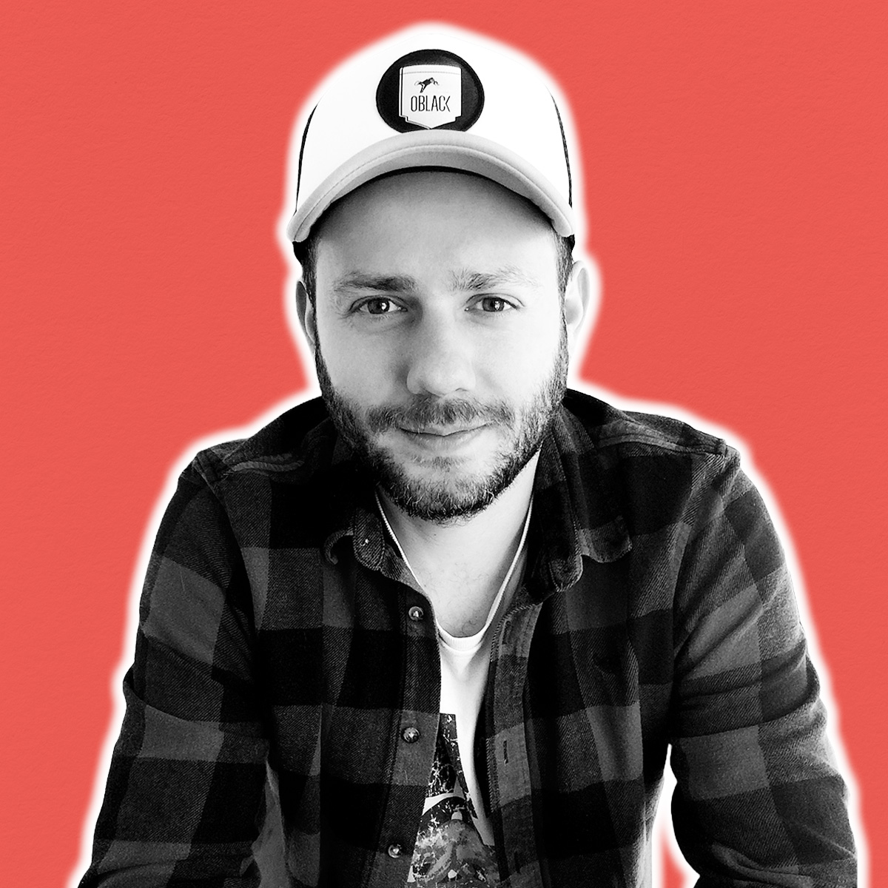

Nicola Guidi
Graphic / Motion / Web Designer
SUMMARY
Fueled by a resolute determination for a life
change, I am eager to
apply precision,
attention to detail, and an artisanal approach
to the
dynamic world of graphic design.
EDUCATION
Diploma In Tourism Industry
Diploma In Modern Guitar
WORK EXPERIENCE
Bar Counter Attendant
Skilled in crafting diverse beverages.
Adept at
ensuring cleanliness and efficiency at the bar,
contributing to an
enjoyable customer
experience.
Bar Manager
Expertise in operations, team leadership,
warehouse and order management.
Guitar Teacher
Freelance Musician
Skills
- Logo Design
- Photography
- Motion Design
- Graphic Design
- HTML
Certificates
- Graphic and Web Design - Job Formazione
- Adobe Certified Professional - Adobe Illustrator
- Adobe Certified Professional - Adobe Photoshop
My photographic path
Where to find me